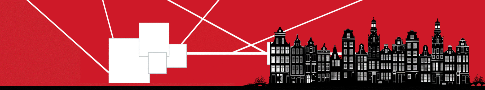

KNUMS
First Workshop on Knowledge Management for Numerical Modeling, Measurement & Simulation
November 26, 2024, Amsterdam, Netherlands
(in conjunction with EKAW 2024)
Research on data and knowledge management has made much progress in recent years, culminating in best practices, widely-adopted standards and (commercial) systems for a wide range of applications. However, despite these advancements, many fields still face challenges in managing the knowledge about complex measurements and numerical models. These challenges span across a broad spectrum of disciplines, from engineering and natural sciences to sociology and economics, and extend to a variety of applications, including manufacturing, agriculture, medicine and public policy. In a wide range of domains, it remains difficult to keep track of the connection between measurement datasets and the physical processes that generate them, or the simulations that use them.
Recently, advancements in (Cognitive) Digital Twins (DTs) and Pre-trained Large Language Models (LLMs) have opened up new opportunities for managing model metadata and integrating diverse data sources, but progress and results are often shared only within their application domain.
News
- Keynote speaker: We are happy to announce that KNUMS will feature a keynote by Hans Onvlee (formerly Senior Research Manager at ASML)
- Deadline extension: The paper submission deadline has been moved to September 24, 2024
Workshop Programme
- 09:00 - 09:10: K-nums introduction
- 09:10 - 10:10: [Keynote by Hans Onvlee] Complex System Diagnostics: Integrating Data-Driven Methods with Knowledge Extraction and Reasoning at ASML
- 10:10 - 10:30: [Paper presentation] Ontology-Based Modeling for Object Segmentation and Eye Gaze data in VR Art Exhibitions (Delaram Javdani Rikhtehgar, Batuhan Usta and Shenghui Wang)
- 10:30 - 11:00: Coffee break
- 11:00 - 11:20: [Paper presentation] Integrating Knowledge Representation Techniques for Land Use Management Optimization (Margaux Van Geem, Benno Kruit and Stefan Schlobach)
- 11:20 - 11:40: [Paper presentation] Linked Open Simulations: An Ontology-Based Approach for System Dynamics Models on Insight Maker (Laryza Mussavi and Benno Kruit)
- 11:40 - 12:00: [Paper presentation] Updating Knowledge Graph Embeddings by Intermediate Estimations on Numerical Attributes (Roderick van der Weerdt, Victor de Boer, Ronald Siebes and Frank Van Harmelen)
- 12:00 - 12:20: [Paper presentation] Knowledge Representation of Time Series Data: A Comparison Analysis of Standardized Ontologies (João Moreira, Cornelis Bouter, Laura Daniele, Mateus Rocha and Marcos Machado)
- 12:20 - 12:30: Closing
Keynote Hans Onvlee
Bio
After his PhD in Physics & Mathematics at NIKHEF/UvA and CERN, Hans left the academic world and started working in industrial research. In 1990 Hans started at Oce (now Canon). After 4 years he was leading one of the research groups, with a strong focus on image processing and software/hardware architectures. In 2000 Hans joined ASML, where he worked in various roles in the system engineering department. In 2018 Hans joined ASML research, to start a team on Data Science, Machine Learning and AI. One of the focus areas was complex systems diagnostics. Research focus was finding ways to combine System Data with System Understanding (knowledge). This requires Knowledge Extraction, Knowledge Representation and Reasoning based on this extracted Systems Knowledge as well as Available System Data. In September this year Hans retired from ASML.
Talk
At ASML Research, we started a track on complex system diagnostics. From experience we know that just looking at the data is often not enough; Re-occurring problems can be recognized using data/logfile pattern recognition, but for rare problems, there is no pattern, and diagnostics depends on system understanding. In this talk I will give a brief introduction on ASML, the diagnostics challenge, and the lines of research being pursued with a focus on the knowledge-extraction and reasoning challenges.
Objectives and Topics
This workshop aims to bring together a diverse set of perspectives from different traditions and will attempt to establish common ground for how these various kinds of representation and processes might be integrated.
Potential topics include, but are not limited to:
-
Representing Measurement
-
Knowledge representation and management techniques for measurement datasets
-
Ontologies and semantic technologies for handling measurement data
-
Ontological representation of time series observations and their associated temporal concepts, e.g., events, situations, processes and temporal relations
-
Measurement data quality assurance and validation techniques in knowledge management systems (e.g. units, uncertainty, provenance)
-
Utilizing Large Language Models (LLMs) for knowledge extraction, management and metadata synthesis in measurement datasets
-
Numerical Modeling, Simulation and Knowledge Management
-
Integration of numerical modeling in knowledge management systems
-
Integration of ontologies in numerical modeling systems
-
Modularization and compositionality of numerical models
-
Equations and formulas management in knowledge repositories
-
Simulation data organization and retrieval strategies
-
Collaborative knowledge sharing platforms for numerical modeling and simulation communities
-
Knowledge management for uncertainty quantification in simulation data
-
FAIR numerical / simulation model sharing
-
Interdisciplinary and Application Perspectives
-
Interdisciplinary perspectives on knowledge management in numerical model / simulation studies
-
Case studies and applications demonstrating effective knowledge management practices in measurement datasets and numerical / simulation models
Important Dates
- Paper submission deadline:
September 17 September 24, 2024
- Authors notification:October 15, 2024
- Author registration: October 17, 2024
- Workshop Day: November 26
- Workshop camera-ready paper (for joint workshop proceedings volume): November 20, 2024
Submissions
The workshop will accept regular papers and short (position) papers. Pieces of ongoing research work are also welcome.
Papers must be submitted in PDF format according to the CEUR-WS template published in the CEUR-WS guidelines. Long papers should be between 10 and 15 pages, while short papers between 5 and 9 pages, including references. Workshop papers must be self-contained and in English.
Further, at least one author of each accepted workshop paper has to register for the conference. Please note that workshop attendance is only granted to registered conference participants.
Submissions should be made via EasyChair: https://easychair.org/conferences/?conf=knums2024
Submit Paper
Programme Committee
- Erik A. Proper, TU Wien, Austria
- Cornelis Bouter, TNO, Netherlands
- Victoria Degeler, UVA, Netherlands
- Flavio Pileggi, University of Technology Sydney, Australia
- Jan-Christof Kalo, University of Amsterdam, Netherlands
- Dilek Dustegor, University of Groningen, Netherlands